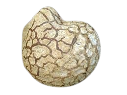
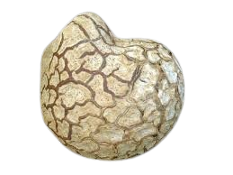

Descripción morfológica
Calvatia gigantea, el "pedo de lobo gigante", es uno de los hongos más espectaculares por su tamaño, perteneciente a la familia Agaricaceae. Sus cuerpos fructíferos globosos pueden alcanzar hasta 150 cm de diámetro y 20 kg de peso, aunque lo común es 30-50 cm. La superficie exterior es lisa y blanquecina en ejemplares jóvenes, volviéndose amarillenta y finalmente marrón olivácea al madurar. No presenta pie diferenciado ni estructuras internas laminares.
Características anatómicas únicas
- Gleba: Inicialmente blanca y firme (comestible), se transforma en una masa pulverulenta de esporas color oliva-marrón en la madurez.
- Peridio: Doble capa protectora; el exoperidio delgado y papiráceo, el endoperidio resistente (2-3 mm de grosor) que se rompe irregularmente para liberar esporas.
- Esporas: Esféricas, verrugosas, de 3.5-5 µm, con un pedicelo corto; una sola espora puede producir hasta 7 trillones de esporas.
- Base esteril: Zona esponjosa en la base que no produce esporas, actuando como "amortiguador".
Distribución y hábitat
Especie cosmopolita presente en praderas, pastizales, bordes de bosques y jardines de Europa, América del Norte y Asia. Prefiere suelos ricos en nitrógeno (a menudo en antiguos corrales o zonas abonadas) y áreas con hierba alta. Fructifica desde finales de verano hasta otoño, ocasionalmente en grupos circulares llamados "anillos de hadas". Su presencia indica suelos fértiles y baja contaminación.
Condiciones óptimas
- Suelos: Profundos, bien drenados, con pH neutro a ligeramente alcalino (6.5-7.5).
- Clima: Requiere lluvias estivales seguidas de días cálidos (20-25°C).
- Asociaciones: A menudo aparece cerca de ortigas (Urtica dioica), indicadoras de suelos nitrogenados.
Ciclo de vida y estrategia reproductiva
Este hongo saprótrofo desarrolla un micelio subterráneo extenso que puede abarcar varios metros cuadrados. Los cuerpos fructíferos emergen en 7-10 días tras lluvias copiosas. En la madurez, el peridio se desgarra por la parte superior, liberando esporas mediante el impacto de gotas de lluvia ("dispersión por salpicadura") y el viento. Un solo ejemplar puede liberar hasta 5 billones de esporas diarias durante una semana.
Etapas clave
- Fase subterránea: El micelio forma nódulos blancos ("botones") que emergen rápidamente.
- Crecimiento acelerado: Aumenta 5-10 cm diarios gracias a presión de turgencia.
- Senescencia: La gleba se autodigiere para convertir tejidos en esporas.
Importancia ecológica y usos
- 🌾 Agroecología: Indicador natural de suelos saludables; usado en agricultura regenerativa para monitorear fertilidad.
- 🍳 Gastronomía: Delicadeza culinaria cuando la gleba es blanca (sabor similar a tofu); rico en proteínas (25% peso seco) y ergosterol (precursor de vitamina D).
- 🏥 Medicina tradicional: Las esporas maduras se usaban como hemostático (coagulante natural) en heridas.
- 🔬 Investigación: Estudios actuales exploran sus metabolitos antitumorales (calvaticina) y antibióticos.
Datos fascinantes
- Récords: El ejemplar más grande registrado pesó 23 kg (Canadá, 2010).
- Historia cultural: Tribus nativas americanas quemaban esporas maduras como ahuyentador de insectos.
- Propiedades físicas: Los ejemplares secos flotan en agua (usados antiguamente como boyas improvisadas).
- Simbolismo: En el folclore europeo se asociaba a relámpagos ("huevos del trueno").
Conservación y recolección sostenible
Aunque no está amenazado globalmente, su recolección requiere precauciones:
- Cosecha ética: Colectar solo ejemplares con gleba completamente blanca; dejar mínimo 20% para reproducción.
- Identificación segura: Confundirlo con Amanitas jóvenes puede ser fatal; cortar siempre para verificar estructura interna.
- Preservación de hábitat: Evitar pastoreo intensivo o uso de fungicidas en zonas donde fructifica.
Métodos de conservación culinaria
- Deshidratación: Rebanadas de 1 cm secadas a 40°C mantienen nutrientes 1 año.
- Congelación: Escaldar previamente para evitar amargor.
- Encurtido: En vinagre con especias, textura similar a champiñones.